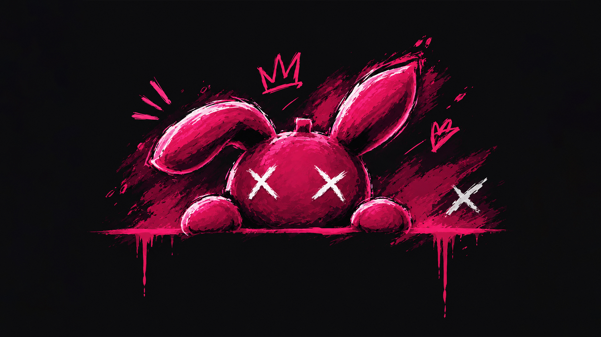
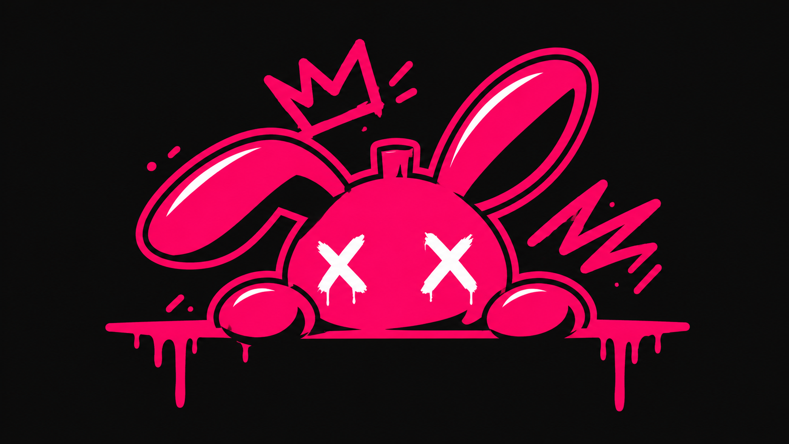

REFORM / WEB CONCEPT↗
reform / собственные идеиMAKE
MAKE
IT REAL.
От идеи к цифровому продукту.
ОТКРЫТЬ ПРОЕКТ ↗Пространство для собственных цифровых идей.
РОЛЬ: [ТВОЯ РОЛЬ] / КОНЦЕПТ
Создаю цифровые проекты -
от первой идеи до живого интерфейса.
От идеи к цифровому продукту.
ОТКРЫТЬ ПРОЕКТ ↗Пространство для собственных цифровых идей.
РОЛЬ: [ТВОЯ РОЛЬ] / КОНЦЕПТСамостоятельный проект внутри Reform.
РОЛЬ: [ТВОЯ РОЛЬ] / КОНЦЕПТ
VISUAL / EXPERIMENT↗Поиск собственного визуального языка.
РОЛЬ: [ТВОЯ РОЛЬ] / КОНЦЕПТПривет, я [твоё имя].
Мне интересно превращать идеи
в понятные цифровые проекты.
И добавлять им характер.
Здесь я показываю свои работы, эксперименты и подход. Мне близки смелая графика, внимание к деталям и интерфейсы, в которых визуальность не мешает смыслу.
Структура, сценарии
и визуальная система.
Цифровые пространства
с собственным характером.
Идеи, с которыми
можно взаимодействовать.
Графика, новые формы
и неожиданные решения.
Мои идеи, которые становятся реальными.
Пространство для создания сайтов и приложений.
Один из моих проектов - не всё, что я делаю.
Проект, вопрос или просто «привет» - пиши.